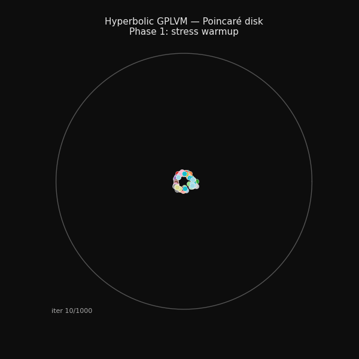
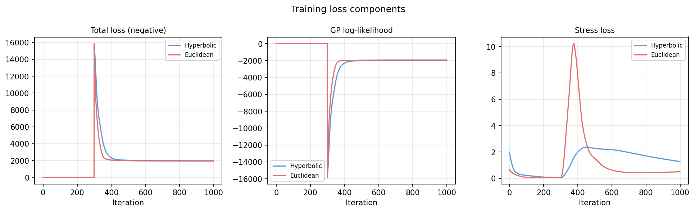
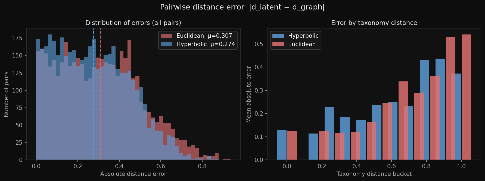
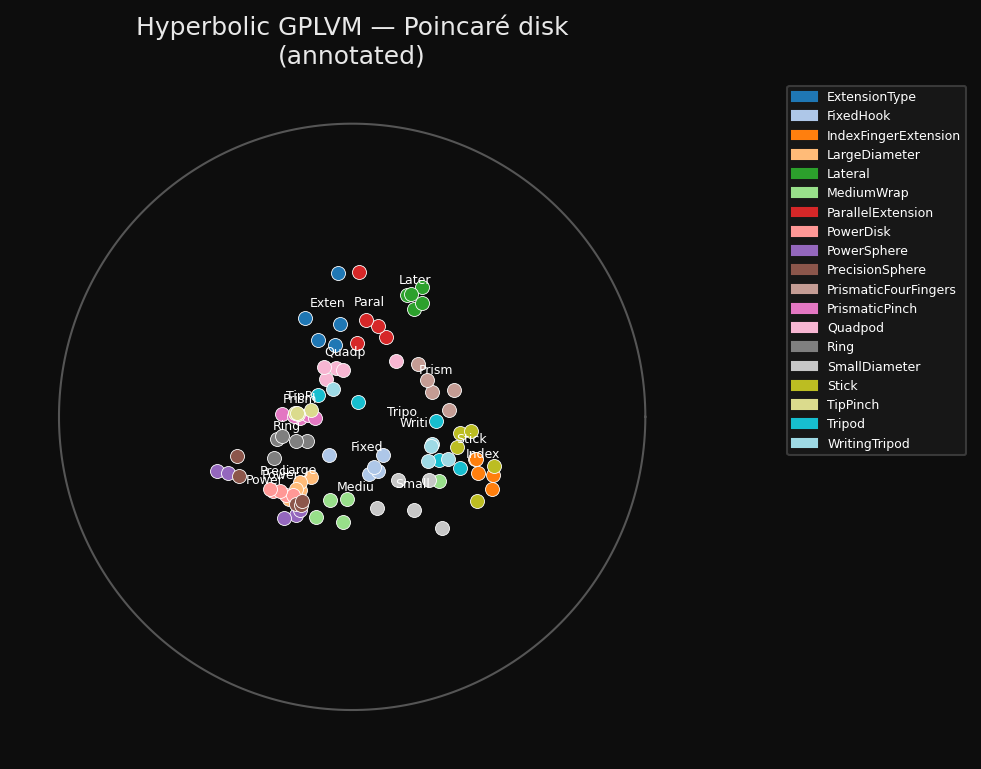
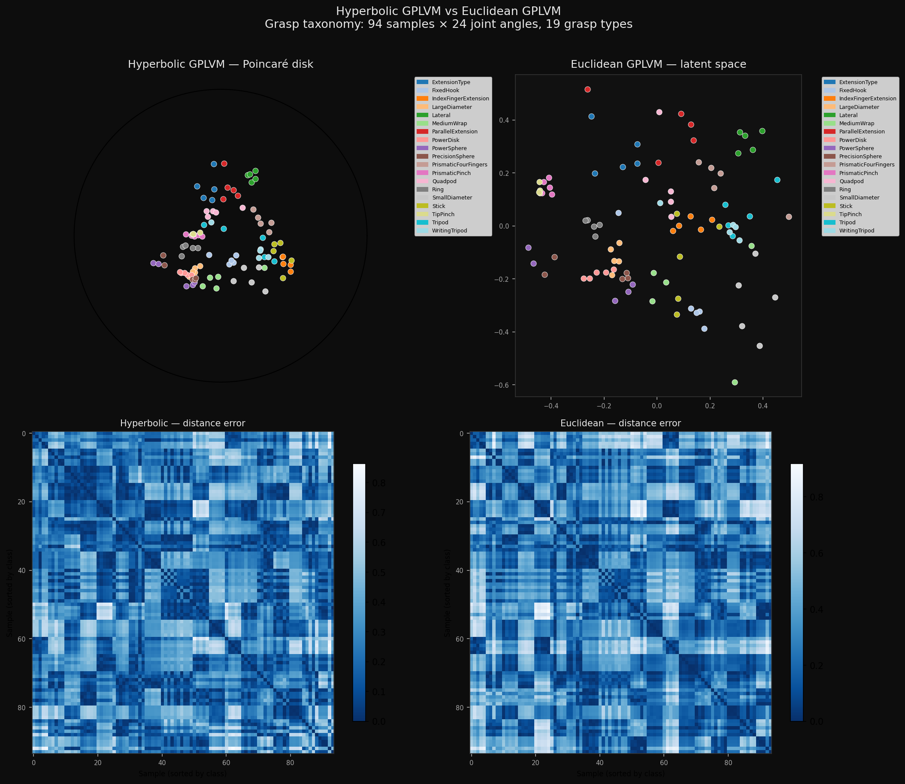

Geometric robot learning is one of those areas where the math is genuinely beautiful and the practical motivation is real. I wanted to go deep on it, so I picked a paper that felt important and built the core model from scratch to understand it properly.
The paper is Bringing Motion Taxonomies to Continuous Domains via GPLVM on Hyperbolic Manifolds by Jaquier et al., published at ICML 2024. I implemented the model from scratch, validated it on the paper's dataset, and built an interactive demo. This is the story of what I built, the math behind it, and what actually broke along the way.

94 hand-grasp recordings arranging themselves on the Poincaré disk during training. The structure you see emerging is the taxonomy of grasps.
The problem the paper is solving
Robots need to understand motion. Not just replay it, but understand its structure well enough to generalize. If a robot has seen a tripod grasp 50 times, can it adapt that grasp to a new object? Can it understand that a tripod and a lateral pinch are more similar to each other than either is to a full power wrap?
That kind of structural knowledge exists in taxonomy trees. Researchers have organized hand grasps into hierarchies where nodes represent grasp families and leaves represent specific grasp types. The tree encodes relationships: some grasps are siblings, some are cousins, some are completely different branches. This is discrete, structured knowledge about motion.
The problem is that actual robot motion is continuous. Joint angles are floating point numbers. There is no tree in there. The question the paper asks is whether you can learn a continuous latent space that respects the discrete tree structure. A map of grasps where things that are taxonomically similar land near each other.
The answer depends entirely on the geometry of that latent space. And this is where it gets interesting.
Why the geometry of the space matters
Most dimensionality reduction just uses flat Euclidean space. You compress your data into 2D coordinates in a plane. That works well for data that has a roughly Euclidean structure. But trees are not Euclidean.
A tree branches exponentially. At depth 1 you have 2 nodes. At depth 2 you have 4. At depth 3 you have 8. The number of nodes grows exponentially with depth. Flat 2D space grows polynomially with radius. You cannot embed an exponentially growing structure into a polynomially growing space without severe distortion. Something has to get squished together.
Hyperbolic space is different. It is a curved space that grows exponentially with radius. Imagine a saddle surface that keeps curving away from you in every direction. The circumference of a circle of radius r in hyperbolic space is 2π sinh(r), which grows exponentially rather than linearly. Trees embed into hyperbolic space with provably low distortion. This is a mathematical theorem, not an approximation.
So if your data has tree structure, a hyperbolic latent space should represent it better. The paper tests this hypothesis on actual robot grasp data. I wanted to verify it myself.
The model
The model is a Gaussian Process Latent Variable Model, or GPLVM. The basic idea is that you learn latent positions X for your data points such that a Gaussian Process trained on X can predict the observed data Y. The latent positions have to be arranged so that nearby points in latent space produce similar observations.
What makes this paper's model specific is that X lives on the Lorentz hyperboloid rather than flat space. The Lorentz model is one way to represent hyperbolic space. Points live in a higher dimensional ambient space and satisfy a constraint: for a point x in R^(Q+1), the Minkowski inner product of x with itself equals -1. That inner product is defined as:
inner(x, y) = -x[0]*y[0] + x[1]*y[1] + ... + x[Q]*y[Q]The geodesic distance between two points on the hyperboloid is:
d(x, y) = arccosh( -inner(x, y) )The kernel that measures similarity between two latent points uses this distance:
k(x, y) = sigma^2 * exp( -d(x,y)^2 / (2 * beta^2) )This is an RBF kernel but using hyperbolic geodesic distance instead of Euclidean distance. The whole kernel matrix is built from pairwise distances on the manifold. The training objective combines three terms:
maximise: GP log-marginal-likelihood(Y | X) # fit the joint angles
+ wrapped-normal log-prior(X) # regularise latent positions
- stress(X, D_tree) # match taxonomy distancesThe stress term is what connects the continuous model to the discrete tree. It penalises the squared difference between pairwise distances in latent space and shortest-path distances in the taxonomy tree. High stress means the latent map is not respecting the tree. The optimizer is pushed to reduce it.
Building the Lorentz geometry from scratch
I did not use the authors' code. I wrote all the geometry myself, which is how I learned it properly.
The first tricky thing is the arccosh computation at the diagonal of the distance matrix. When you compute the distance from a point to itself, the inner product should give exactly -1, which means -inner(x,x) = 1, and arccosh(1) = 0. That is the correct answer. But floating point arithmetic means you sometimes get values slightly less than 1, and arccosh of anything less than 1 is NaN.
The standard fix is to clamp the argument: arccosh(clamp(-inner, 1 + eps)). But here is the subtle problem I ran into. With eps = 1e-6, the clamped value at the diagonal is not 1, it is 1 + 1e-6. And arccosh(1 + 1e-6) is approximately 0.0014, not zero. So the diagonal of the distance matrix has small nonzero values. This silently corrupts the stress loss and the kernel matrix.
The fix is to zero the diagonal explicitly after computing the distance matrix:
D = arccosh(clamp(-inner_products, 1 + 1e-6))
D = D * (1 - eye(N)) # force diagonal to exactly zero
A related issue appeared in the log map, which computes the tangent vector pointing from one manifold point to another. When you call log_map(x, x) (same point), the direction vector has norm zero and you are dividing by it. The threshold I originally used to detect this case was d < 1e-7, but because of the clamping the actual self-distance was around 1.4e-3. The threshold was below the actual value, so the guard never triggered and you got NaN. Changing it to d < 1e-2 fixed it.
Riemannian optimization
Standard gradient descent does not work on manifolds. If you take a gradient step on a point constrained to the hyperboloid, you move off the hyperboloid. The new point is no longer a valid hyperbolic point.
The solution is to use a Riemannian optimizer that respects the manifold geometry. I used geoopt, which provides a ManifoldParameter type and a RiemannianAdam optimizer. Gradient steps are computed in the tangent space at the current point and then mapped back onto the manifold using the exponential map. The latent positions stay on the hyperboloid throughout training.
For people running without geoopt, I also implemented a fallback: optimize the spatial coordinates (the non-time component) directly and project back to the manifold at each step. It is less principled but it works and gives similar results.
The two-phase training problem
My first attempts produced a result where the hyperbolic model was barely better than the Euclidean baseline on taxonomy metrics. The GP log-likelihood was better (the hyperbolic model fit the joint angles better) but the latent points were all clustered near the origin of the Poincaré disk. The taxonomy structure was not there.
The problem was initialization order. When you start training the joint objective from the beginning, the GP term dominates. It has a much larger scale than the stress term. The optimizer learns to fit the joint angles without ever developing the taxonomy structure in the latent space. By the time the stress term starts mattering, the latent positions are already locked into a configuration that is hard to escape.
The fix is a two-phase training schedule. In phase one, you optimize only the stress term, with no GP. The latent points spread across the manifold, arranging themselves to match the taxonomy tree distances. They develop structure. Then in phase two, you switch to the joint objective. The GP couples the latent positions to the observed joint angles, but from a starting point that already has good taxonomy structure.

The spike at iteration 300 is the phase transition. GP coupling switches on and the loss jumps before converging. The stress is higher in phase two because the GP is now pulling the latent points toward what fits the joint angles, not just what fits the tree.
After adding the warmup, the results were clearly better:
| Metric | Hyperbolic | Euclidean |
|---|---|---|
| Mean distance error (lower is better) | 0.274 | 0.307 |
| Taxonomic coherence k=5 (lower is better) | 2.74 | 3.23 |
| GP log-likelihood (higher is better) | -1942 | -1949 |
Hyperbolic wins on all three. Without the two-phase warmup, it only won on GP log-likelihood. The warmup is what makes the geometry matter.
What the results look like

Distribution of absolute distance errors for all 4,371 grasp pairs. The hyperbolic distribution (blue) is shifted left, meaning fewer pairs have large errors. The right panel breaks this down by taxonomy distance bucket.
The histogram is the clearest way to see what is happening. For every pair of grasps, we measure how different the latent distance is from what the taxonomy tree says it should be. The hyperbolic model consistently produces smaller errors, especially at medium-range distances where the tree structure matters most.

Final latent positions on the Poincaré disk. The unit circle is the boundary (you can never reach it). Each point is one of 94 grasp recordings, coloured by class and labelled at the class centroid.
The Poincaré disk is the 2D projection of the hyperboloid. A point x on the hyperboloid maps to a point in the unit disk via p = x[1:] / (1 + x[0]). The origin of the disk corresponds to the north pole of the hyperboloid, and the boundary corresponds to infinity. Grasp classes that are taxonomically related cluster together spatially. You can see the structure that the stress warmup built.

Full comparison: Poincaré disk (top left) vs Euclidean latent space (top right), and the corresponding distance error heatmaps sorted by class label. Darker blue means smaller error.
Numerical fixes that were not obvious
Two issues with gradients took me time to track down.
In the Euclidean model, pairwise distances involve a sqrt. The gradient of sqrt(x) at x=0 is infinite. At the diagonal of the distance matrix, every point has distance zero to itself. So computing sqrt(sq_dist) and then zeroing the diagonal gives you infinite gradients at the diagonal positions before they are zeroed. PyTorch propagates NaN from those positions. The fix is to add a small epsilon before the sqrt and zero the diagonal after:
D_latent = sqrt(sq_dist + 1e-10)
D_latent = D_latent * (1 - eye(N)) # zero diagonal
The other issue was the Cholesky decomposition of the kernel matrix. Early in training, the kernel parameters are not well calibrated and the kernel matrix can be nearly singular. Cholesky fails on singular matrices. The fix is adaptive jitter: try to decompose, if it fails add a small diagonal term and retry. I implemented this with jitter increasing from 1e-6 to 10.0 across six attempts. It never needed more than the second or third level, but having the full range there meant training never crashed on a bad initialization.
74 tests
I wrote tests before I was confident the math was right. This turned out to be important. The tests caught the diagonal arccosh issue before I would have noticed it in the training curves. They also caught a test isolation bug where random state from one test was affecting another, making Cholesky fail intermittently depending on the order tests ran.
The test suite covers every mathematical component: manifold constraint verification (does every point satisfy inner(x,x) = -1?), inner product and distance computation, exp and log map roundtrips, Poincaré projection and back, PCA initialization, the wrapped normal prior, both kernels, GP marginal likelihood, stress loss, and end-to-end convergence for both models.
pytest tests/
tests/test_lorentz.py 29 tests
tests/test_kernels.py 13 tests
tests/test_data.py 15 tests
tests/test_gplvm.py 17 tests
74 passed in 1.38sTry it yourself
The interactive demo is live on Hugging Face Spaces. You can select specific grasp classes and watch them highlight on the Poincaré disk. The comparison tab shows both models side by side. The full code is on GitHub.
The demo lets you select any of the 19 grasp classes and see where they live on the hyperbolic disk relative to each other. Try selecting Tripod and Lateral, then compare with Wrap. The distances in the disk should reflect the taxonomy.
To run training yourself:
git clone https://github.com/anshuman-dev/gphlvm-repro
cd gphlvm-repro
pip install torch numpy scipy networkx matplotlib geoopt pytest
python scripts/train.py --n-iter 1000 --stress-scale 5.0 --stress-warmup 300
python scripts/animate.py # generates the training gif
python scripts/make_figures.py